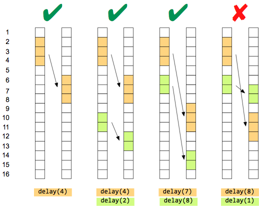

Control instructions in device accesses
Device access can include control statements in the :instruction: columns of :apgAccess: objects.
These statements affect how the actions and operation specified in the other columns are applied to the device pins.
The following statements are supported:
- for
- delay
- countedMatch
These statements are described in detail below.
for
A for statement in the :instruction: column causes all statements in the :data: and :operation: columns between the for and the forend to be evaluated once for each loop. The number of loop repetitions is determined by the arguments provided for for.
A loop begins with a
C-like statement for (<initialization>;
<test>;
<increment>), where:
- <initialization>: The setup statement for the loop variable, for
example,
loopCount=1. - <test>: The test for continuing the loop, for example,
loopCount<16. If this test evaluates to true at the beginning of a loop, another loop iteration is performed. - <increment>: The instruction to increment the loop counter which is
performed after each loop iteration but before the test for the next iteration. For example,
loopCount+=1.
A loop ends with forend, which must be on a line of its own (that is,
a line that contains ~ in all other columns).
delay
A delay statement in the :instruction: column causes the execution of all statements in the :data: and :operation: columns between the delay and the delayend to be delayed for a certain number of edges when the device access is executed. The amount of the delay is determined by the parameter provided to delay.
A delay block begins with a
delay(<latency>) statement, where
<latency> is the number of edges by which the execution of the block
is to be delayed.
A delay block ends with delayend, which must be on a
line of its own (that is, a line that contains ~ in all other
columns).
There are certain conditions that may must be observed when using delayed operations; violating these rules will trigger compiler errors:
- Device accesses can contain multiple delay blocks, but earlier blocks may not be delayed so much that they are executed after later blocks.
- Blocks may not be delayed beyond the end of the device access.
- Device access delays may not be combined with non-transparent x-modes.
- Device access delays may not be negative, i.e., it is not possible to use the delay statement to execute operations earlier than normal.
The basic principles of delaying parts of accesses are visualized in these examples:

From left to right:
- A simple delay by four edges.
- Two delays that do not change the execution order of the delay blocks. (The first block is still executed before the second one.)
- Two delays in which the first block is moved past the original position of the second one. Still, because the second block is moved as well, their execution order relative to each other does not change. (The first block is still executed before the second one.)
- Two delays in which the blocks change their execution order: The original first block
(orange) is now executed after the original second one (green). This is not permitted and would
create an error.Note You can also delay entire device accesses when you call them in the APG program file. See Device access delays for more information.
countedMatch
A countedMatch statement in the :instruction: column causes all statements in the :data: and :operation: columns between the countedMatch and the matchend to be evaluated once for each loop. The number of loop repetitions is determined by the arguments provided for countedMatch.
A counted match loop begins with the countedMatch(n) statement, where the integer number n is the number of times that the loop is executed at the most.
A counted match loop ends with matchend, which must be on a line
of its own (that is, a line that contains ~ in all other columns).
Example
Example 1, for:
{ :instruction: :pin: :states: :data: }
{ "for (i=0; i<8; i+=1)" A {L H} 1 }
{ ~ A {L H} 0 }
{ "forend" ~ ~ ~ } Example 2, delay:
...
:interface: { myDelay }
:table:
{ :instruction: :pin: :states: :data: :operation: }
{ ~ DQi_0 {0 1} 0 dbi(gddr5_DBI) }
{ ~ DQi_1 {0 1} 1 dbi(gddr5_DBI) }
{ ~ DQi_2 {0 1} 0 dbi(gddr5_DBI) }
{ ~ DQi_3 {0 1} 1 dbi(gddr5_DBI) }
{ ~ DQi_4 {0 1} 0 dbi(gddr5_DBI) }
{ ~ DQi_5 {0 1} 1 dbi(gddr5_DBI) }
{ ~ DQi_6 {0 1} 0 dbi(gddr5_DBI) }
{ ~ DQi_7 {0 1} 1 dbi(gddr5_DBI) }
{ ~ DBI.0 {0 1} 0 dbi(gddr5_DBI) }
{ delay(myDelay) EDC.0 {L H} 0 crc(gddr5_crc_write,0) }
{ ~ ~ {L H} 0 crc(gddr5_crc_write,1) }
{ ~ ~ {L H} 0 crc(gddr5_crc_write,2) }
{ ~ ~ {L H} 0 crc(gddr5_crc_write,3) }
{ ~ ~ {L H} 0 crc(gddr5_crc_write,4) }
{ ~ ~ {L H} 0 crc(gddr5_crc_write,5) }
{ ~ ~ {L H} 0 crc(gddr5_crc_write,6) }
{ ~ ~ {L H} 0 crc(gddr5_crc_write,7) }
{ delayend ~ ~ ~ ~ }Example 3, countedMatch:
apgAccess:
{
:name: "MATCH_WRITE_DQ"
:interface: { "xAddr" "yAddr" "DW"}
:table:
{
:format:
{ :instruction: :pin: :states: :data: }
{ countedMatch(10) XADDR { 0 1 } "xaddr(xAddr,yAddr,0)" }
{ "" YADDR { 0 1 } "yaddr(xAddr,yAddr,0)" }
{ "" DATA { 0 1 } "data(DW,xAddr,yAddr,0)" }
{ "" PrgChk { L H } 1 }
{ matchend ~ ~ ~ }
}
}
Functional changes
- Introduced before SmarTest 6.3.2
- MTP 3.0.1: New instruction delay()